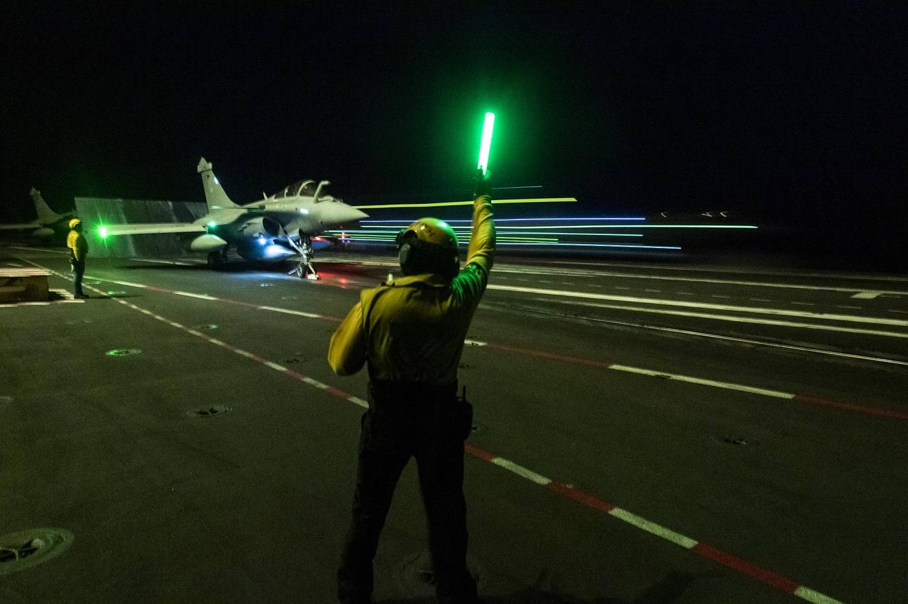
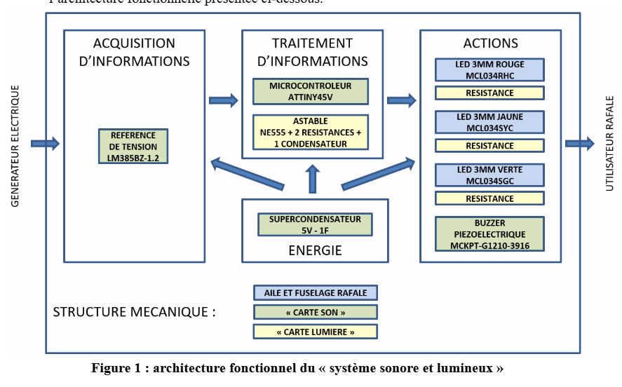

Gestion d'éclairage LED d'une maquette du Rafale
Conception et réalisation d'une carte électronique assurant la gestion de l'éclairage LED d'une maquette miniature du Rafale.
Context
Cliquez sur la carte pour afficher les typons et leur explication.
Ouvrir le détail →
Analyse du cahier des charges
Analyse du besoin
L’analyse du cahier des charges a permis d’identifier les fonctions attendues du système d’éclairage d’une maquette miniature du Rafale. L’objectif principal est de reproduire de manière réaliste les effets lumineux présents sur l’avion réel, notamment les feux de navigation et les signaux lumineux utilisés lors des opérations au sol. Le système doit assurer une gestion autonome des différents éclairages tout en respectant les contraintes d’encombrement, de consommation énergétique et de coût imposées par le projet. Cette étude a permis de définir les solutions électroniques nécessaires à la commande des LED ainsi qu’à l’intégration du système dans la maquette.
Cliquez sur la carte pour afficher les typons et leur explication.
Ouvrir le détail →
Analyse de l'architecture du système
Analyse de l'architecture du système
L’analyse du synoptique architectural a permis d’identifier les différents blocs fonctionnels du système sonore et lumineux intégré à la maquette du Rafale. L’architecture est organisée autour de quatre fonctions principales : l’acquisition d’informations, le traitement des données, l’alimentation énergétique et les actions réalisées sur l’utilisateur. Une référence de tension fournit les informations nécessaires au microcontrôleur ATTiny45V, qui pilote les effets lumineux et sonores. Le système intègre également un oscillateur basé sur un NE555 ainsi qu’un supercondensateur assurant l’alimentation du montage. Les sorties commandent plusieurs LED de signalisation ainsi qu’un buzzer piézoélectrique afin de reproduire les effets lumineux et sonores du Rafale. Cette étude a permis de valider les échanges d’informations entre les différents blocs et de justifier l’architecture retenue.
Cliquez sur la carte pour afficher le texte et les photos de cette partie.
Ouvrir le détail →
Analyse des essais et validation
Les tests réalisés sur la maquette du Rafale ont permis de valider le fonctionnement de l’ensemble des effets lumineux et sonores. Les différentes séquences d’éclairage ont été vérifiées afin de s’assurer du bon comportement des LED et de leur synchronisation avec les fonctions attendues. Les essais ont également confirmé la conformité de la carte électronique réalisée ainsi que la fiabilité de l’assemblage des composants. Les résultats obtenus démontrent que le système répond aux exigences fonctionnelles définies dans le cahier des charges.

Analyse des écarts et conformité
Analyse des défauts
Identifier les écarts éventuels et corriger les problèmes rencontrés.